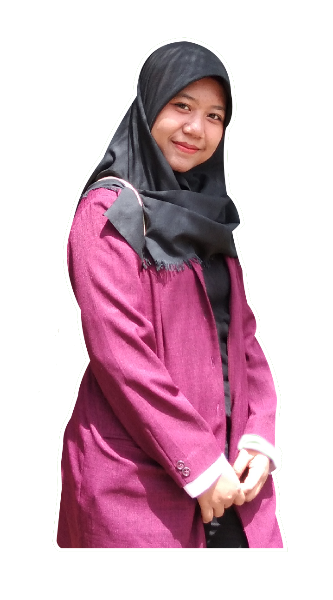

Home
Portfolio
Karimun Jawa

Halo Guys
Salam Kenal
Ini adalah semua tentang aku untuk memenuhi tugas mata kuliah Desain Web. Mata kuliah ini diampu oleh Bapak Kunto Imbar Nursetyo, M.Pd.
Yuk kenal aku lebih jauh lagi...
Kenali Aku dan Kesukaanku
Profil
Dewi Fatimah Hardiyanti adalah seorang mahasiswa Teknologi Pendidikan di Universitas Negeri Jakarta.
Wisata Favorit
Dewi sangat suka wisata bahari. Salah satu wisata favoritnya adalah Karimun Jawa yang berada di Jepara. Doain ya Dewi bisa kesana suatu saat nanti.